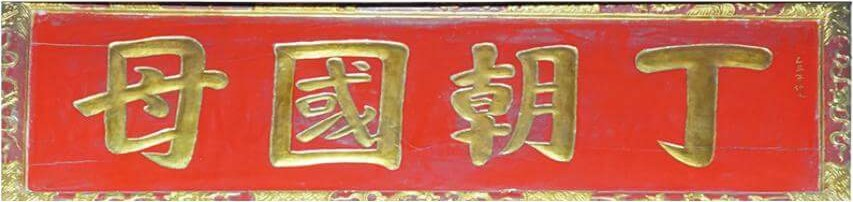

CỐ ĐÔ HOA LƯ
Salle Khải Thánh

Situé dans l'ensemble architectural du site du temple du roi Đinh Tiên Hoàng, le sanctuaire de Khải Thánh est un édifice d'une signification spirituelle et historique tout à fait exceptionnelle.
Il s'agit de l'espace sacré dédié au culte du Père de la Nation Đinh Công Trứ et de la Mère de la Nation Đàm Quý Thị - les parents qui ont élevé le héros exceptionnel de la nation. La présence de cet édifice dans cet espace de culte crée un ensemble harmonieux : il honore à la fois l'immense contribution du fondateur du pays et rend un profond hommage aux ancêtres qui ont jeté les bases solides de l'œuvre du premier Empereur à avoir édifié l'État du Đại Cồ Việt.
D'un point de vue architectural, le sanctuaire de Khải Thánh porte la forte empreinte de l'art de la dynastie Nguyễn du XIXe siècle. Il est construit selon le modèle traditionnel en forme de caractère « Nhị » (Deux), comprenant deux bâtiments : le Tiền bái (Vestibule) et le Hậu cung (Sanctuaire intérieur). Le Tiền bái est le lieu où sont placées les tablettes funéraires en caractères chinois du Père et de la Mère de la Nation, tandis que le Hậu cung abrite leurs statues.

En remontant aux sources de l'histoire, le Père de la Nation Đinh Công Trứ était le père du roi Đinh Tiên Hoàng. Le livre Đại Việt sử ký toàn thư (Annales complètes du Đại Việt) consigne : « L'Empereur de la famille Đinh, de son nom de tabou Bộ Lĩnh, était originaire de la grotte de Hoa Lư, Châu Đại Hoàng... fils du gouverneur de Hoan Châu, Đinh Công Trứ. Công Trứ était autrefois général sous les ordres de Dương Đình Nghệ, et s'est vu confier le poste de gouverneur de Châu Hoan. Plus tard, il a fait allégeance au roi Ngô (Ngô Vương), conservant son ancien poste jusqu'à son décès ».
De son vivant, M. Đinh Công Trứ a été général sous le commandement de Dương Đình Nghệ, chargé de la lourde responsabilité de gouverneur de Châu Hoan, avant de continuer à servir le roi Ngô. Le fait que Đinh Công Trứ ait occupé ces postes importants démontre qu'il était un officier militaire prestigieux, directement impliqué dans les tournants politiques et militaires du pays au Xe siècle. L'apparition de M. Đinh Công Trứ dans le système de culte de l'ancienne capitale de Hoa Lư n'a donc pas seulement pour but de rendre hommage au père du roi Đinh, mais aussi d'honorer une génération d'ancêtres qui ont contribué à établir les fondements politiques et militaires de la période d'indépendance et d'autonomie de la nation.
Outre ce père héroïque, les annales historiques gravent également la gratitude pour la naissance et l'éducation données par la Mère de la Nation Đàm Quý Thị - une fille née dans la province de Bắc Ninh. Après le décès de son mari, elle a ramené son fils Đinh Bộ Lĩnh dans sa province natale de Ninh Bình pour y vivre. Cette décision fut un tournant marquant : c'est sur cette terre sacrée de Ninh Bình, génératrice de talents, que Đinh Bộ Lĩnh a été protégé, élevé et a grandi.

Dans les sources folkloriques, l'image de Mme Đàm Thị est associée aux années de jeunesse de Đinh Bộ Lĩnh, à travers les histoires du garçon s'entraînant au combat avec des étendards de roseaux et rassemblant ses amis. Ces anecdotes brossent un portrait vivant de l'intelligence naturelle et de l'esprit héroïque qui se sont manifestés très tôt chez ce souverain éclairé.
L'image de la Mère de la Nation Đàm Thị incarne ainsi non seulement la noble valeur de l'amour maternel sacré, mais représente également le rôle essentiel des femmes vietnamiennes dans la construction des fondations familiales, l'éducation des talents et leur contribution aux grands événements de la nation et du peuple.
À travers le temps et les vicissitudes de l'histoire, le sanctuaire de Khải Thánh, dans l'ancienne capitale de Hoa Lư, restera à jamais un lieu préservant les belles valeurs morales traditionnelles de la nation, à savoir « en buvant l'eau, se souvenir de la source », rappelant aux générations présentes et futures de toujours graver dans leur cœur l'immense dette de gratitude envers les ancêtres des premiers jours de la fondation et de la défense du pays.